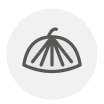

Akagai (arche)
Ark shell
| Nom latin | Scapharca broughtonii |
|---|---|
| Famille | Crustacés & coquillages |
| Origine | Fonds vaseux de la mer intérieure de Seto et de la baie de Sendai |
| Saison | novembre – mars |
| Goût | Sucré · Salin · Charnu |
| Prix courant | 60–120 €/kg |
Ce que c’est
L’arche vit dans une vase pauvre en oxygène et porte de l’hémoglobine dans son sang, ce que ne fait presque aucun autre bivalve : c’est ce composé ferreux qui rend le pied cramoisi et laisse cette légère note de sang. Au comptoir, la tranche incisée est claquée une fois sur la planche — le muscle se contracte et se recroqueville, ce qui est à la fois une texture et la preuve que le coquillage vivait l’instant d’avant.
En cuisine
Incisez le pied de fines entailles parallèles aux trois quarts de son épaisseur avant de le claquer, sinon il se recroqueville de travers. Frottez la collerette au sel et rincez deux fois : c’est là que loge le sable, et aucun dégorgeage à l’eau ne l’en délogera.
S’accorde avec
Wasabi Sauce soja Vinaigre de riz Shiso Gingembre Sudachi Kombu Sel
De saison en même temps
Ormeau Agneau de pré-salé Palourde Bouquet (crevette rose) Canard Grondin
Une erreur ici, ou un oubli ? Dites-le nous